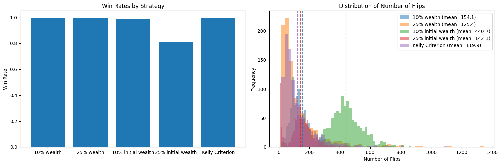

Kelly Principle in Betting#
https://www.researchgate.net/publication/312091638_Rational_Decision-Making_Under_Uncertainty_Observed_Betting_Patterns_on_a_Biased_Coin
You should always bet a constant fraction of your wealth in order to maximize the expected (log) of your wealth. This is known as the Kelly Principle.
The Kelly Principle finds an optimal fraction given by the formula:
where \(p\) is the probability of winning.
Let’s simulate this in a biased coin toss. We will simulate a biased coin toss with a probability of winning of 0.6. We will simulate 1000 rounds of betting. We will bet a fraction of our wealth given by the Kelly Principle.
We’ll look at 3 strategies:
Betting a fixed amount of the initial wealth (10% and 25%)
Betting a fixed amount of the current wealth (10% and 25%)
Betting a fraction of the wealth given by the Kelly Principle
This simulation shows, yes, the Kelly Princple is optimal in the long run. But in practice the exact proportion you bet doesn’t matter a lot. The important thing is to bet a constant fraction of your wealth. You’re guaranteed to never go broke (as long as you can bet fractions of pennies).
Never, ever bet a fixed amount of money! Note: this is what blinds are forcing you to: you have to bet a minimum amount of money, regardless of the odds. So they encourage you to go bankrupt.
Show code cell source
import numpy as np
from abc import ABC, abstractmethod
from typing import Tuple, List
import matplotlib.pyplot as plt
class BettingStrategy(ABC):
"""Abstract base class for different betting strategies"""
@abstractmethod
def get_bet(self, bankroll: float, history: List[bool]) -> Tuple[float, bool]:
"""
Returns (bet_amount, bet_on_heads)
bet_amount: how much to bet
bet_on_heads: True to bet on heads, False for tails
"""
pass
class BiasedCoinGame:
def __init__(self,
initial_bankroll: float = 25.0,
win_threshold: float = 250.0,
heads_probability: float = 0.6):
self.initial_bankroll = initial_bankroll
self.win_threshold = win_threshold
self.heads_probability = heads_probability
def play_game(self, strategy: BettingStrategy) -> Tuple[float, int, bool]:
"""
Plays one full game using the given strategy
Returns: (final_bankroll, num_flips, won)
"""
bankroll = self.initial_bankroll
history = []
num_flips = 0
while 0 < bankroll < self.win_threshold:
# Get bet from strategy
bet_amount, bet_on_heads = strategy.get_bet(bankroll, history)
bet_amount = min(bet_amount, bankroll) # Can't bet more than you have
# Flip coin
is_heads = np.random.random() < self.heads_probability
history.append(is_heads)
num_flips += 1
# Update bankroll
won_bet = (is_heads == bet_on_heads)
bankroll += bet_amount if won_bet else -bet_amount
return bankroll, num_flips, bankroll >= self.win_threshold
# Example strategy: Always bet 10% on heads
class FixedPercentageStrategy(BettingStrategy):
def __init__(self, percentage: float = 0.1):
self.percentage = percentage
def get_bet(self, bankroll: float, history: List[bool]) -> Tuple[float, bool]:
return bankroll * self.percentage, True
class FixedAmountStrategy(BettingStrategy):
def __init__(self, percentage: float = 0.1, initial_bankroll: float = 25.0):
self.percentage = percentage
self.initial_bankroll = initial_bankroll
self.bet_amount = initial_bankroll * percentage
def get_bet(self, bankroll: float, history: List[bool]) -> Tuple[float, bool]:
return self.bet_amount, True # Always bet fixed amount on heads
Show code cell source
class KellyCriterionStrategy(BettingStrategy):
def __init__(self, heads_probability: float = 0.6):
self.heads_probability = heads_probability
def get_bet(self, bankroll: float, history: List[bool]) -> Tuple[float, bool]:
# Kelly Criterion formula: f* = (p*b - q)/b
# where p = probability of winning, q = probability of losing
# b = odds received (1 in this case)
# Always bet on the favorable outcome (heads)
p = self.heads_probability # probability of heads
q = 1 - p # probability of tails
b = 1 # even money odds
kelly_fraction = (p*b - q)/b
return bankroll * kelly_fraction, True
def run_simulation(game: BiasedCoinGame, strategy: BettingStrategy, num_games: int = 1000) -> List[Tuple]:
"""Run multiple games with the same strategy and return results"""
results = []
for _ in range(num_games):
result = game.play_game(strategy)
results.append(result)
return results
def analyze_results(results: List[Tuple]):
"""Analyze and print summary statistics"""
final_bankrolls, num_flips, won_games = zip(*results)
win_rate = sum(won_games) / len(won_games)
print(f"Win rate: {win_rate:.1%}")
print(f"Average number of flips: {np.mean(num_flips):.1f}")
print(f"Median final bankroll: ${np.median(final_bankrolls):.2f}")
def plot_comparison(strategies_results: dict):
"""Plot comparison of different strategies"""
fig, (ax1, ax2) = plt.subplots(1, 2, figsize=(15, 5))
# Plot win rates
win_rates = {name: sum(won for _, _, won in results)/len(results)
for name, results in strategies_results.items()}
ax1.bar(win_rates.keys(), win_rates.values())
ax1.set_title('Win Rates by Strategy')
ax1.set_ylabel('Win Rate')
# Plot distribution of number of flips
for name, results in strategies_results.items():
flips = [n for _, n, _ in results]
mean_flips = np.mean(flips)
# Plot histogram and mean line
hist = ax2.hist(flips, alpha=0.5, label=f"{name} (mean={mean_flips:.1f})", bins=50)
ax2.axvline(mean_flips, color=hist[2][0].get_facecolor(),
linestyle='--', alpha=0.8)
ax2.set_title('Distribution of Number of Flips')
ax2.set_xlabel('Number of Flips')
ax2.set_ylabel('Frequency')
ax2.legend()
plt.tight_layout()
return fig
# Run simulations
if __name__ == "__main__":
game = BiasedCoinGame()
strategies = {
'10% wealth': FixedPercentageStrategy(0.1),
'25% wealth': FixedPercentageStrategy(0.25),
'10% initial wealth': FixedAmountStrategy(0.1, 25.0),
'25% initial wealth': FixedAmountStrategy(0.25, 25.0),
'Kelly Criterion': KellyCriterionStrategy(0.6)
}
results = {}
for name, strategy in strategies.items():
print(f"\nRunning simulation for {name}...")
results[name] = run_simulation(game, strategy, num_games=1000)
analyze_results(results[name])
# Plot results
plot_comparison(results)
plt.show()
Running simulation for 10% wealth...
Win rate: 100.0%
Average number of flips: 154.1
Median final bankroll: $261.07
Running simulation for 25% wealth...
Win rate: 100.0%
Average number of flips: 125.4
Median final bankroll: $275.87
Running simulation for 10% initial wealth...
Win rate: 98.6%
Average number of flips: 440.7
Median final bankroll: $250.00
Running simulation for 25% initial wealth...
Win rate: 81.3%
Average number of flips: 142.1
Median final bankroll: $250.00
Running simulation for Kelly Criterion...
Win rate: 100.0%
Average number of flips: 119.9
Median final bankroll: $271.06
